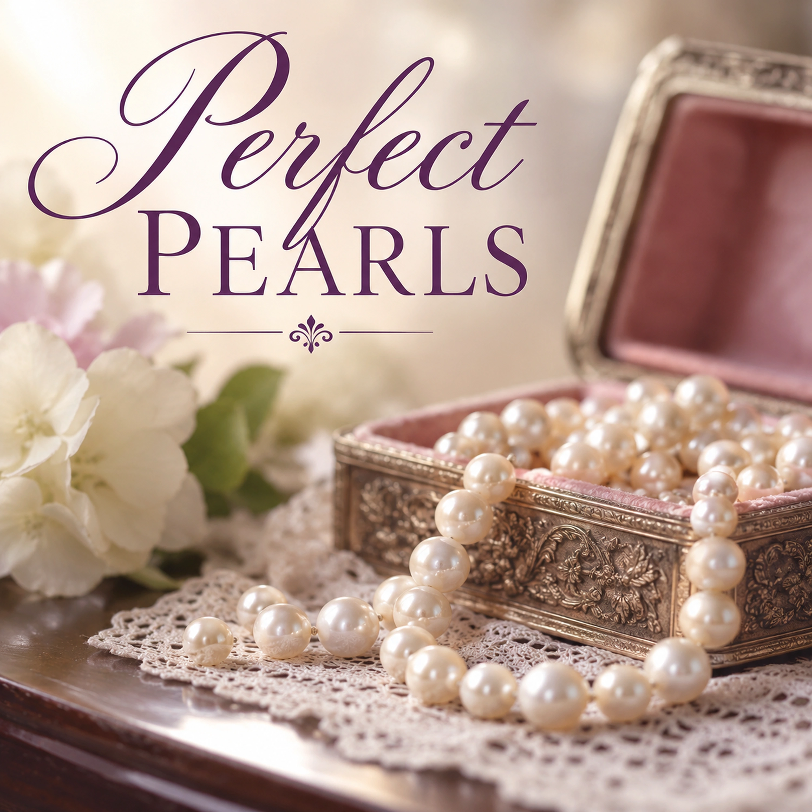

Perfect Pearls

Lyrics
Verse 1
I longed for them when I was young
Something to keep to make me feel good
Objects so precious, they had to be strung
Imaginings I never understood
Verse 2
Once a teacher said I was smart.
Once a trainer escorted me past the dark
One boss said He's working in you
Hubby once said, I can't believe you do what you do.
Chorus
I keep them on my imagined strand...
These Pearls I treasure from them
Pearls of quality in the greatest demand
Perfect Pearls, beautiful, lustrous gems.
Verse 3
In my life now I hear these words
You are a blessing to me and to those around you!
In my mind, those are my inner reserves
Precious to me if only they knew.
Chorus
I keep them on my imagined strand...
These Pearls I treasure from them
Pearls of quality in the greatest demand
Perfect Pearls, beautiful, lustrous gems.
Bridge
Those people will never comprehend
The value of the words they bestowed
Not something I would part with or spend
But a source of joy as yet untold.
Final Verse
Matthew wrote of a pearl of great price
For which you sell everything you own
Without ever even thinking twice
Those words for me, like pearls that shone.
Chorus
I keep them on my imagined strand...
These Pearls I treasure from them
Pearls of quality in the greatest demand
Perfect Pearls, beautiful, lustrous gems.
Devotional
Perfect Pearls
Scripture gives remarkable weight to the words we speak. Proverbs says, “A word fitly spoken is like apples of gold in pictures of silver” (Proverbs 25:11), and elsewhere, “Pleasant words are as an honeycomb, sweet to the soul, and health to the bones” (Proverbs 16:24). A sentence spoken at the right moment can become far more valuable to the person receiving it than the speaker ever realizes.
The song, Perfect Pearls, remembers several ordinary sentences spoken over the course of a lifetime. A teacher said, “I was smart.” A trainer helped someone through a dark time. A boss recognized God at work. A husband expressed wonder at what his wife does. The people who offered those words may have forgotten them almost immediately. The person receiving them did not.
That should make us consider our own words carefully. We rarely know what another person is carrying when we speak to them. A sincere word of encouragement may reach someone who has heard criticism for years. A simple expression of gratitude may tell a person that unnoticed work really was noticed. Telling someone that we see evidence of God working in their life may strengthen them during a time when they cannot see it themselves.
Words That Minister Grace
Paul gives believers a standard for speech: “Let no corrupt communication proceed out of your mouth, but that which is good to the use of edifying”, so that it may “minister grace unto the hearers” (Ephesians 4:29). First Thessalonians says, “comfort yourselves together, and edify one another” (1 Thessalonians 5:11). These are more than instructions to be pleasant. They show that our speech can strengthen another person and become one of the ways grace is expressed between believers.
The bridge of the song, Perfect Pearls, says, “Those people will never comprehend / The value of the words they bestowed.” That may often be true. The speaker cannot know every difficult day on which those words will later be remembered. We speak once; another person may carry the words for years.
The Pearl of Great Price
The final verse reaches toward Jesus' parable in Matthew 13, and here the distinction matters. Jesus says, “the kingdom of heaven is like unto a merchant man, seeking goodly pearls”, who, after finding “one pearl of great price”, “went and sold all that he had, and bought it” (Matthew 13:45–46).
The human words remembered in the song are not that pearl. Christ's parable speaks of the incomparable value of the kingdom of heaven. The song borrows the image of a pearl to describe treasured words; it does not place those words on the same level as the treasure Jesus describes. Yet the image helps us understand something about value: some treasures cannot be measured by what the world would pay for them.
Perhaps that is why certain words become pearls. Their value is not in eloquence. Sometimes they are only a sentence. Their value lies in truth, love, timing, and the grace they carry into another person's life. Long after the speaker has forgotten saying them, the recipient may still be adding them to an imagined strand—bringing them out during difficult days and remembering, Someone saw something good in me. Someone cared. Someone noticed. Someone reminded me that God was working.
The Pearls We Have Not Yet Given
The song, Perfect Pearls, leaves us with another question. We may know which pearls others have given us, but how many are we carrying around that belong on someone else's strand?
There may be a thank-you we have never said, an encouragement we assumed someone already knew, an expression of love we have postponed, or something good we have noticed in another person but never put into words. Scripture tells us to use speech that edifies and ministers grace. We cannot know what God may do with a gracious word once we give it away.
So when the opportunity comes, perhaps we should not keep the pearl in our pocket. Give it. Someone may treasure it for the rest of their life.
Prayer
Lord, thank You for the people whose words have encouraged me, strengthened me, and reminded me of Your work in my life. Help me remember that my own words carry weight as well. Guard me from careless speech, and teach me to recognize opportunities to encourage, thank, comfort, and build up others. Give me the courage to say the good thing that should be said while there is still time to say it.
May my words reflect Your truth and grace, and may I never confuse the precious gifts people give one another with the incomparable treasure You have revealed in Your kingdom. Teach me to receive gracious words with gratitude and to give them freely when they may strengthen someone else. In Jesus' name, Amen.
Extra Info — Scripture Map
A word fitly spoken: Proverbs 25:11
Gracious words bring sweetness and healing: Proverbs 16:24
Words that build up and minister grace: Ephesians 4:29
Encouraging and edifying one another: 1 Thessalonians 5:11
The pearl of great price: Matthew 13:45–46